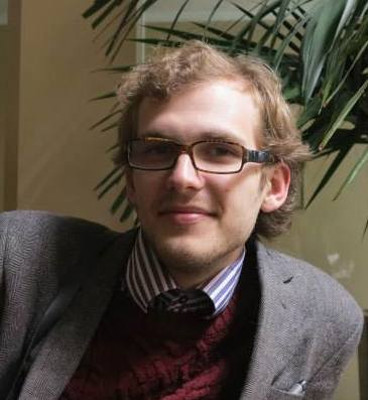
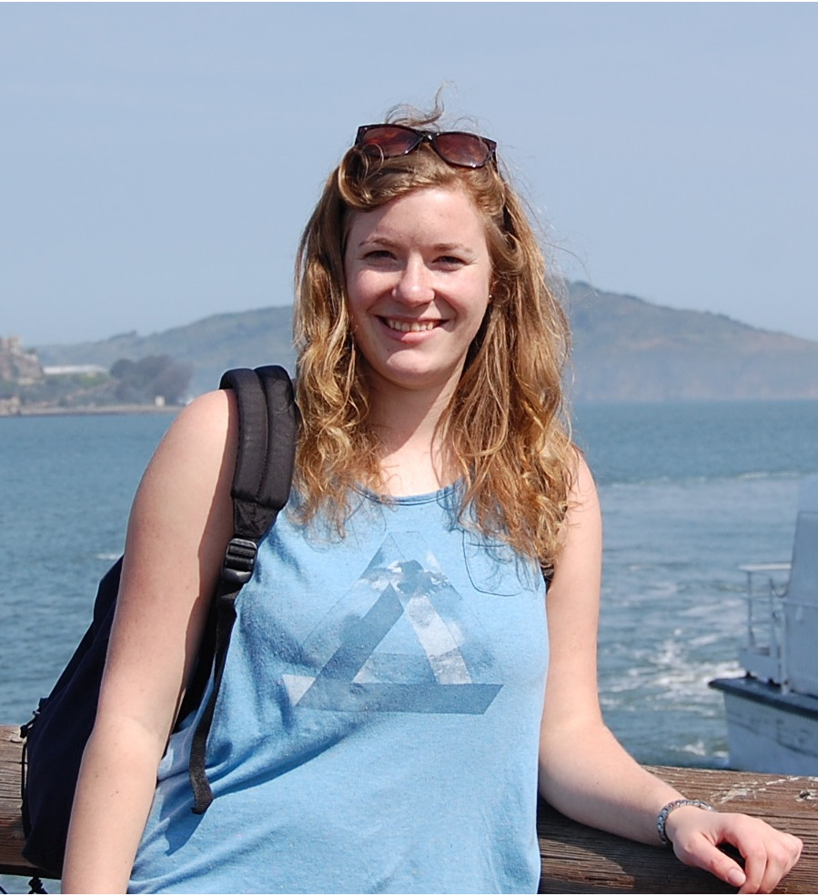
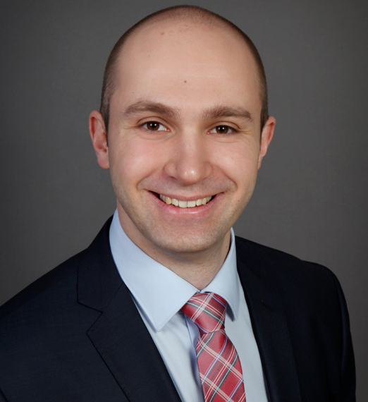

We are an international team of young enthusiastic scientists in the field of multiscale materials modelling. We're committed to delivering a successful and stimulation summer school that can build on the foundations of the previous years' successes.
Hi! I am a first year PhD student of the Centre for Doctoral Training in Theory and Simulation of Materials at Imperial College London. I am based at the Department of Materials studying nano-systems that could improve the treatment of cancer. The aim is to achieve suitable nanotechnology that enables targeted drug delivery, photo-thermal therapy and live imaging of tumour tissue. I enjoy playing badminton, music and meeting new (and old) friends!

I'm a PhD student in the Theory and Simulation of Materials CDT at
Imperial College London working on developing a molecular sensor
utilising Plasmonic Nanoparticles at Liquid-Liquid Interfaces. I have a
keen interest in effective teaching methods, science communication,
visualisation and current affairs.
Hi, I am a post-graduate researcher at Imperial College London under the
supervision of Dr. Paul Tangney and Prof. Peter Haynes. We work on improving the description
of electrostatic interactions in atomistic Force Fields models that are fit to Density
Functional Theory. Successful improvements have the potential to greatly aid the fidelity of simulations
of such important systems as metal oxide interfaces and nanoparticles!
I love both British and the international scientific community and seek to get involved in
various events such as outreach or organizing conferences and workshops.
Outside of science I enjoy exploring the numerous vibrant neighborhoods of London by
bicycle and playing football in Hyde Park.

Hi, I'm Freda and I'm a first year PhD student in the CDT in Theory and Simulation of Materials at Imperial College.
I'm based in Chemical Engineering and spend my time modelling the flow of liquids through nanoporous membranes using nonequilibrium molecular dynamics. These membranes have the potential to be used in various filtration systems, e.g. water purification, and could make these more efficient and reduce capital cost (saving the world one desalination plant at a time).
When I'm not doing that you can usually find me playing rugby or in the pub.

I achieved my first degree in Mechanical Engineering from Imperial College London,
where I was introduced to material science and it's application in different technologies such as jet engines.
Then I joined TSM_CDT at Imperial College London to further improve my skills and knowledge in material science and modelling.
Currently I am studying SiC/SiC woven composites and environmental barrier coatings using meshfree methods.
I attended the Hermes Summer School of 2014 and improved my science communication skills, while meeting bright and interesting people in the field.
This inspired me to take part in organising the next Hermes summer school.
I am a PhD student in Computational Mechanics at Imperial College London. I am now working on a research project on the numerical simulation of particle stress and fracture,
together with the Applied Modelling and Computation Group and in a collaboration with Johnson Matthey Technology Centre.
I was born in Monza (near Milan), in Italy, and before coming to live in the UK in 2013 I have studied at Politecnico di Milano (Polytechnic University of Milan),
where I have earned a Bachelor’s degree in Building Engineering and a Master’s degree in Structural Engineering.
My main research interests are oriented towards computational mechanics and its applications to fracture propagation,
structural mechanics, heat transfer and acoustics.
When I am not busy running computer simulations or making experiments with high-velocity impact testing machines,
I also sing (mostly jazz and rock) and play guitar.

I am a PhD student at Georg August University of Göttingen, Germany. At our research group under the guidance of Prof. Marcus Müller we conduct
large scale computer simulations of biological and soft matter systems. My main reseach utilizes Molecular Dynamics and Monte Carlo methods to study
structural and energetic properties of self-assembled organic monolayer on liquid metal surfaces. Apart from science I am also fond of science fiction,
foreign languages and different types of sport such as yoga and swimming. I also enjoy travelling and meeting new people. Hope to see you all at
Hermes 2016!
I am a first year PhD student in the Department of Mechatronics Engineering at Manipal University Jaipur, India and
I am currently working on the project entitled "Computational Study of Nanomaterials invoking DFT Based Descriptors".
My hobbies are cricket, photography and traveling. I am also involved in outreach activities such as teaching to
undergraduate engineering students and working for NGO.
I’m a PhD student in the Department of Metallurgy and Materials at the University of Birmingham. My studies are particularly targeting materials modelling of nickel based superalloys at elevated temperatures for aerospace applications. I am an amateur photographer, like tango and sailing.
I am a PhD student in the Centre for Doctoral Training in Theory and Simulation of Materials at Imperial College London. I work across the departments of Physics, Mechanical Engineering and Materials/Nuclear Engineering. My research is on the mathematical theory and multiscale modelling of diffusion in fractured continua, employing methods from theoretical solid mechanics and irreversible thermodynamics; the overarching aim of this work is to describe a hydrogen embrittlement mechanism that affects modern nuclear reactor technology. I am also interested in science outreach and communication to the public and media.